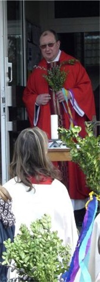
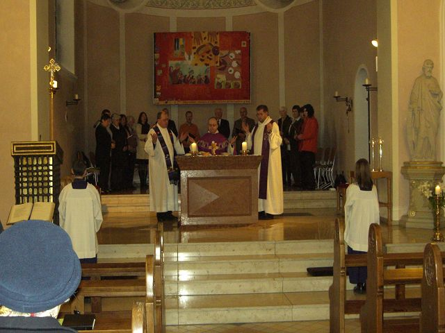

Abschluss der Gemeindemission
Der diesjährige Palmsonntag

Vor der Palmweihe
kennzeichnet für die Gemeinde St. Josef das Ende einer 16-tägigen Gemeindemission. Mit täglich neuen Impulsen am Morgen und thematisch gegliederten Predigten am Abend haben die beide Patres über Glaubensfragen gesprochen und dabei zahlreiche Mitglieder unserer Gemeinde in ihren Bann gezogen.
Denn Pater Benning und Pater Welscher

Pater Welscher vor der Palmweihe
Pater Benning beim Einzug in die Kirche
haben mit viel innerer Wärme und großer persönlicher Ausstrahlung zu aktuellen Themen Stellung bezogen und dabei die Zuhörerinnen und Zuhörer ihrer Predigten und Gespräche ermuntert, z. B. ihrem Gewissen zu folgen, positiv zu denken, den Sonntag als freie Zeit für sich zu nutzen und sich mit den jeweiligen Talenten in die Gemeinschaft der Gemeinde einzubringen, über die der einzelne ganz individuell verfügt.
Mit täglich neuen Impulsen am Morgen und thematisch gegliederten Predigten am Abend haben die beide Patres über Glaubensfragen gesprochen und dabei zahlreiche Mitglieder unserer Gemeinde in ihren Bann gezogen. Denn Pater Benning und Pater Welscher haben mit viel innerer Wärme und großer persönlicher Ausstrahlung zu aktuellen Themen Stellung bezogen und dabei die Zuhörerinnen und Zuhörer ihrer Predigten und Gespräche ermuntert, z. B. ihrem Gewissen zu folgen, positiv zu denken, den Sonntag als freie Zeit für sich zu nutzen und sich mit den jeweiligen Talenten in die Gemeinschaft der Gemeinde einzubringen, über die der einzelne ganz individuell verfügt.
Für das personale Angebot und die zahlreichen Anregungen der Patres Martin Benning und Rudolf Welscher während der Mission – die letzte hat 1992 stattgefunden – dankt die Gemeine St. Josef am Ende des sehr gut besuchten „Abschiedsgottesdienstes“ am Palmsonntag mit „Standing Ovation“ und einem ganz herzlichen „vergelts Gott“.
Be 12.04.2006
zurück
Gemeindemission – Halbzeit
Nicht endlich, sondern leider Halbzeit!
Seit einer Woche sind wir in unserer Gemeinde St. Josef, Haßlinghausen Teil der von uns gewünschten Gemeindemission unter Leitung der Oblaten-Patres Benning und Welscher.
Beinahe wie im Fluge sind diese ersten acht Tage vorüber gegangen, und immer wieder kamen wir in Predigten und bei Gesprächen auf das zentrale Thema der Mission Gottes Liebe künden weite Kreise ziehen zurück.
Während wir uns zunächst Gedanken gemacht haben über
· Gott, an den wir glauben,
· die eigene, selbstverantwortete Gewissensentscheidung,
· die Aussagen der Bibel,
· die Zukunft der Jugend in der Kirche und über
· den Tod und die Auferstehung
werden wir in der nun beginnenden zweiten Missionswoche unser Augenmerk auf weitere, hochaktuelle Inhalte fokussieren:
|
Tag
|
Thema
|
|
Sonntag
|
Sonntag den Tag für den Menschen feiern
|
|
Montag
|
Darf der Mensch alles das tun, was er kann? Pränatale Diagnostik, Klonen, Gentechnologie, Euthanasie…,
|
|
Dienstag
|
Christ sein im Alltag Das Leben aus dem Glauben bewältigen
|
|
Mittwoch
|
Gemeinde in unruhiger Zeit Wie mit den neuen Strukturen leben?
|
|
Donnerstag
|
Meditativer Abend zum Thema Dein Wort ist mein Fuß eine Leuchte, ein Licht für meine Pfade
|
|
Freitag
|
Evangelisch Katholisch Ist das nicht egal?
|
|
Samstag/Sonntag
|
Gemeinde wohin? Wir knüpfen aneinander an…
|
Die abendlichen Predigten zu diesen Themen sollten Sie nicht versäumen, weil sie Perspektiven aufzeigen, die das Leben lebenswert machen!
Die Predigten beginnen montags bis freitags jeweils gegen 20.00 Uhr nach der Hl. Messe in unserer Kirche. Anschließend haben Sie Gelegenheit zu einem gemeinsamen Gedankenaustausch im Pfarrheim.
Am Samstag und Sonntag werden während der Hl. Messen um 17.15 Uhr resp. um 11.00 Uhr die für das Wochenende vorgesehenen Inhalte erarbeitet.
Das ausführliche Programm finden Sie weiter unten auf dieser Seite.
Be 02.04.2006
Eröffnungsgottesdienst und Empfang
Im Rahmen eines feierlichen Gottesdienstes haben am 25.03.2006 unser Herr Pfarrer Mihai Imbria zusammen mit den Oblaten-Patres Martin Benning und Rudolf Welscher unsere 16-tägige Gemeindemission eröffnet.

Beim „Vater-unser-Gebet“ während der Eröffnungsmesse
Unterstützt durch unseren Kirchenchor stimmte die Gemeinde während der Hl. Messe zahlreiche moderne Lieder an.
In seiner Eröffnungspredigt verkündete Pater Welscher OMI der mit großer Aufmerksamkeit folgenden Gemeinde den Geist des „Schalom“ – den Geist des Friedens.
Als zentrale Aussage des christlichen Glaubens machte er den Kirchenbesuchern deutlich, dass es Gottes Anliegen ist, jedem Menschen das Heil zu schenken.
Der Mensch müsse sich nur darauf einlassen, müsse sich der Botschaft Christi öffnen. Hierzu bedürfe es immer wieder der guten Vorbilder, insbesondere in den Familien.
Durch tätiges Handeln zum Wohle des anderen werde die Botschaft Christi transportiert, und so komme der Mensch, durch christliche Handlungen und caritative Erfahrungen gestärkt, zu seinem eigenen Heil, zu seinem Glaubensbekenntnis.
Nach dem Gottesdienst traf sich die Gemeinde zu einem Stehempfang im Pfarrheim, um im persönlichen Kontakt die Oblatenpatres in unserer Pfarrei herzlich willkommen zu heißen.
|
Pater Benning im Gespräch mit Fam. Breiter |
|
Pfarrer Imbria mit Gästen aus Gelsenkirchen |
|
|
Zwei Gemeindemitglieder |
|
Zwei Messdiener nach getaner Arbeit
|
|
|
|
| Pfarrer Imbria im Gespräch… |
und Pater Welscher im Gespräch |
|
|
|
Mit Freude sehen die drei Geistlichen
der Gemeindemission entgegen |
|
Gruppenbild mit unseren Gästen
|
|
|
|